Everything below is live on the preview theme now. Each item shows the request, what changed, a before and after,
and, where the change is something you can adjust yourself, the exact steps in the theme editor.
Every screen was checked on desktop and on a phone-sized screen.
Your request: pair the add-ons offered after a build with a discount, with the percentage set by you, per product.
When a customer adds a build to the cart, the "Your build is in" prompt offers featured add-ons. Each featured
add-on can now carry its own discount tier: 10%, 15%, 20% or 25% off, or none, chosen from a dropdown in the theme
editor. The prompt shows the original price crossed out, the reduced price, and a percentage badge, so the offer is
clear before the customer decides. When they click Add, the discount is applied to the cart automatically: the
customer never types a code, and the cart and checkout show the reduced price.
Behind the scenes each tier is a real Shopify discount code with a random suffix, so it cannot be guessed, and it is
never advertised anywhere on the site. The codes only discount products in a dedicated "Configurator upsells"
collection (hidden from the storefront), so the offer cannot leak onto bundles or other products. The four codes
are already set up in your store and work with your other promotions.
The full flowLoad a preset, add the build to the cart, add the discounted Swiss Freeze Mod from the prompt, view the cart.
The promptSwiss Freeze Mod at 10% off; the Aura set has no tier, so it shows its normal price.
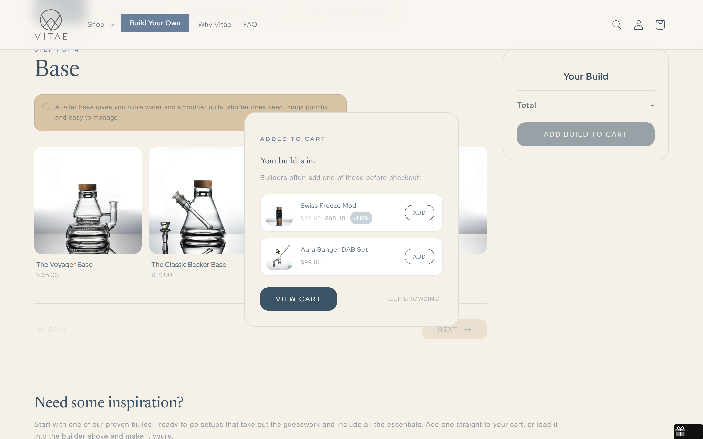
The cartThe discount is already applied; the code shows on the line item.
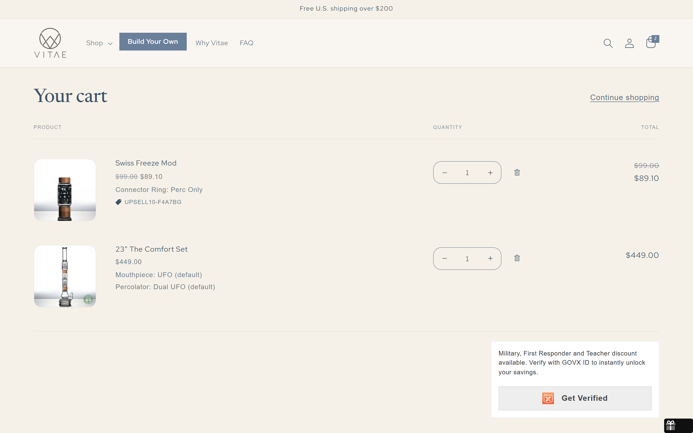
Prompt, on a phone
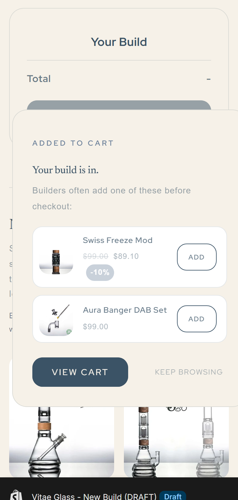
Cart, on a phone
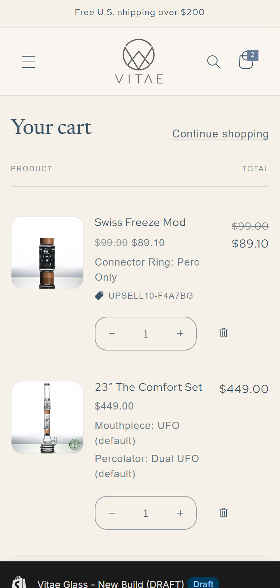
How to set the discount on an add-on
In Shopify admin, click Online Store in the left sidebar (under Sales channels).
Under Draft themes, find Vitae Glass - New Build (DRAFT) and click Edit theme.
Click the page selector at the top center of the editor (it reads Home page), choose Pages, then Build Your Own.
In the left sidebar, click the Vitae configurator section to expand it. Its blocks are listed underneath: the four preset cards, then the Featured upsell blocks (currently Swiss Freeze Mod and Aura Banger DAB Set).
Click a Featured upsell block. The settings panel on the right shows Product and, directly under it, the Discount dropdown: None, 10% off, 15% off, 20% off or 25% off.
Pick a tier and click Save (top right). The prompt updates immediately; nothing else needs to change.
How to add a new discounted add-on
First, in Products, Collections, open Configurator upsells and add the product to it. This collection is hidden from the site; it only tells Shopify which products the discounts may apply to. A product that is not in it would show the reduced price in the prompt but be charged full price at checkout, so always do this step first.
Back in the theme editor (steps 1 to 4 above), click Add block under the Vitae configurator section and choose Featured upsell.
Pick the Product, choose a Discount tier, drag the block to set its order in the prompt, and click Save.
The four discount codes themselves are recorded in the section's "Upsell discount codes" fields. They do not need to be touched; if one is ever deactivated or renamed in admin, paste the new code into the matching field there.
2. Slate & Sand color palette, chooser removed
Your pick: the Slate & Sand palette with the classic header, and the floating palette chooser removed.
The Slate & Sand palette is now the site's real color set, applied everywhere: page backgrounds, buttons,
badges, accents and section bands. The floating palette and header chooser is gone. The header keeps the
layout you chose (the "Classic" option).
IvoryLight SandSoft Blue-GreyDeep Slate Blue
Before
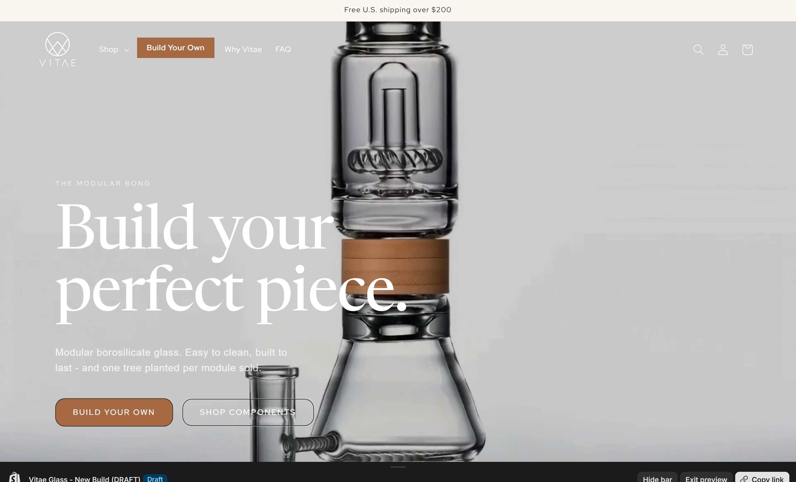
After
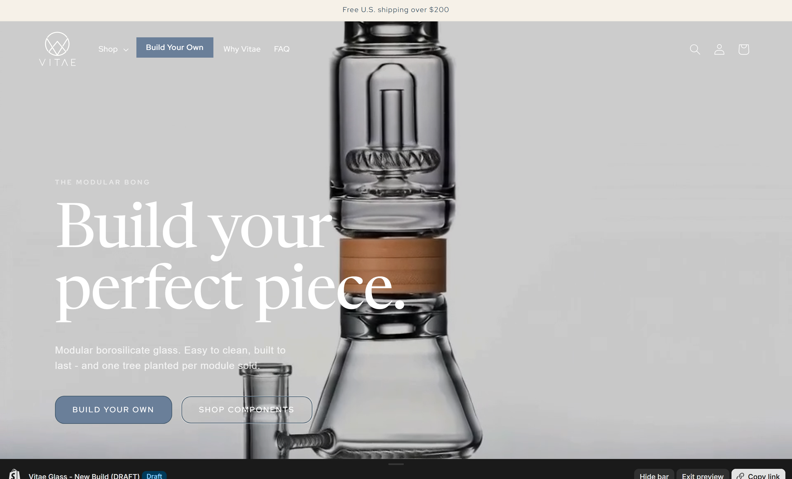
Before (further down the homepage)
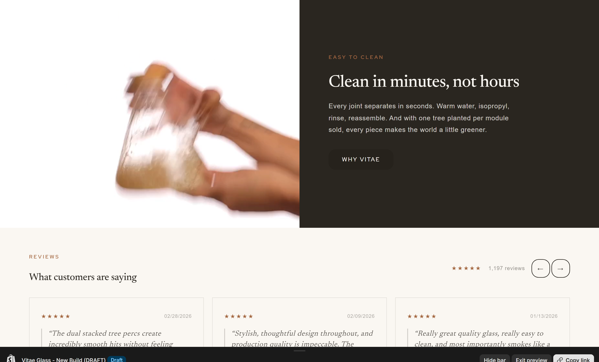
After
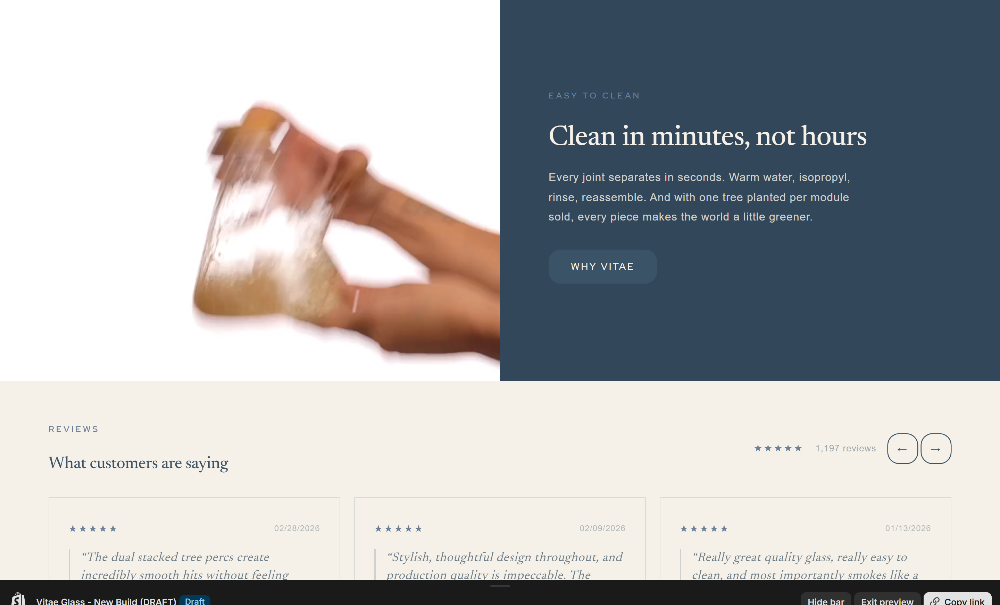
How to adjust any color yourself
In Shopify admin, click Online Store in the left sidebar (under Sales channels).
Under Draft themes, find Vitae Glass - New Build (DRAFT) and click Edit theme.
Click the paint-roller icon in the left rail (Theme settings), then Colors.
The site uses five color schemes. Scheme 1 is the page background, Scheme 2 the sand panels, Scheme 3 the
blue-grey bands, Scheme 4 the dark slate sections, Scheme 5 the accent buttons. Click a scheme to change its
background, text and button colors.
Click Save (top right). The change applies to every page that uses that scheme.
3. Shop All switches categories without reloading the page
Your feedback: jumping between collections on Shop All refreshed the whole page instead of filtering in place, which felt laggy.
Clicking a category tab now swaps the product grid in place. The page no longer flashes white and reloads;
the tab underline and product count update, the new products fade in, and the web address still changes so a
category can be bookmarked or shared and the browser's back button steps between categories. The Filter and
Sort controls keep working on the switched grid.
Both recordings below run on the same deliberately slowed connection so the difference is visible at
normal speed, and the orange counter in the corner shows how many times the page has loaded. Before: a tab
click is a full page load (blank screen, counter climbs with every click, scroll position lost). After: two category
switches, still one page load.
BeforeA tab click reloads the whole page: blank screen, counter climbs, scroll position lost.AfterOnly the product grid changes; the page stays put.
Managing the tabs themselves is unchanged: Online Store, Edit theme, page selector to Collections, Default collection, then the Vitae collection tabs section.
4. "Completes your build" images show without hovering
Your feedback: in the Completes your build section on product pages, the main image only appeared on hover.
The product recommendations under a product load a moment after the rest of the page, and the hover-preview
behaviour on cards was only being set up for cards present at first load, so those cards had no visible image
until you hovered. Cards that appear after the page loads (recommendations, recently viewed, a switched Shop
All grid) now get their image immediately, and the hover preview still cycles through the extra photos.
Before
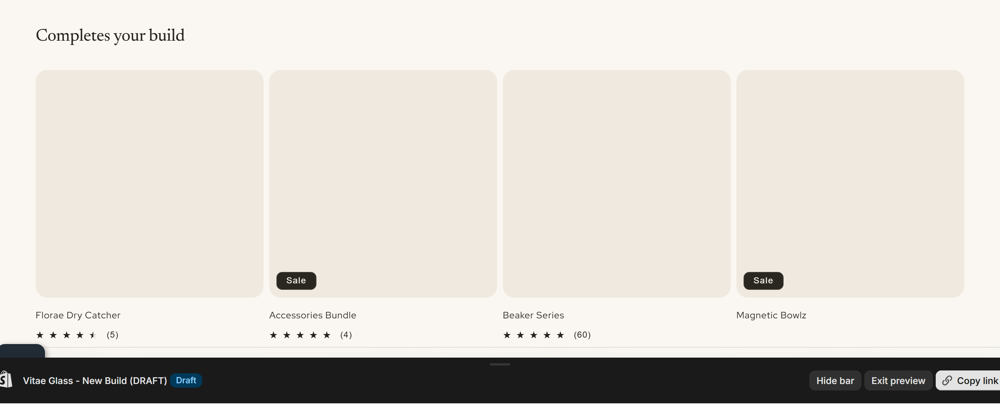
After
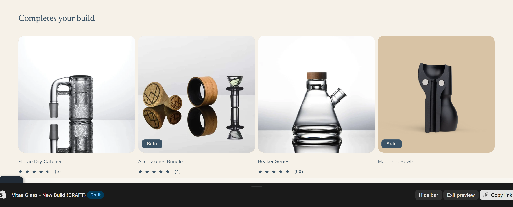
5. Product page: callout bar under the buy buttons
Your request: callout icons you can configure higher up on the product page, right under the cart buttons (free shipping over $200, free returns, easy to clean, and so on).
A compact icon-and-text bar now sits directly under Add to cart and Buy it now on every product page, in the
spot where shoppers are deciding. It ships with four callouts: Free U.S. shipping over $200, 30-day easy
returns, Easy to clean, and 1 tree planted per module. Because the same claims apply to every product, the bar
is one shared block on the product template, edited in one place rather than product by product. The old
four-box strip at the bottom of the product page was showing the same information twice, so it has been
removed from product pages (it stays on the homepage and the Build Your Own page).
Before
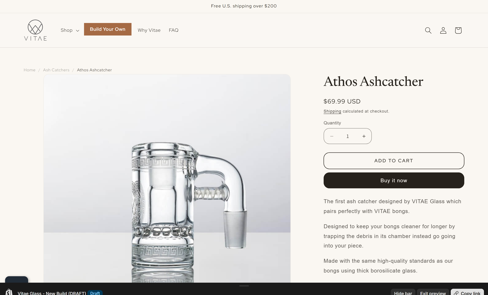
After
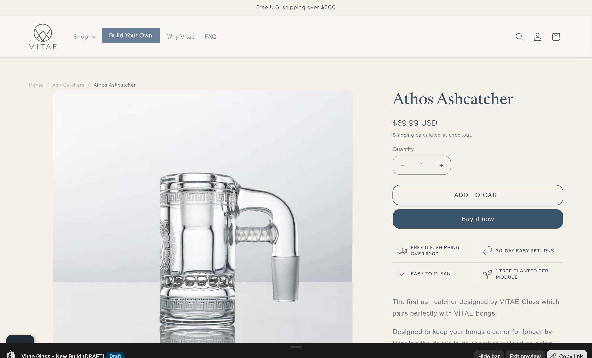
After, on a phone
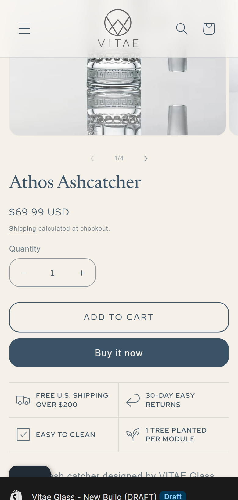
How to change the callouts yourself
Online Store, then Edit theme on the draft theme.
Click the page selector at the top center, choose Products, then Default product.
In the left sidebar, open the Product information section and click the Icon with text block (it sits just under Buy buttons).
There are four pairings. For each one pick an Icon from the list (truck, return arrow, check mark, plant, star, snowflake, lock and more) or upload your own small Image, and type the Heading.
Leave a pairing's Heading empty to hide that slot (the bar collapses to three or two).
Drag the block up or down in the sidebar to move the bar (for example under the description instead), then click Save.
If a single product ever needs a different claim, that can be added later as a per-product override without redoing this.
6. Benefits strip: divider between the rows on mobile
Your feedback: on mobile, the benefits strip (free shipping, one tree per module, and so on) needed a divider when it wraps to two rows.
On phones the four-item strip wraps to two rows of two. There is now a horizontal rule between the rows and the
stray vertical line on the right edge is gone, so it reads as a clean two-by-two grid. This applies wherever the
strip is used (homepage, Build Your Own); both images below are the Build Your Own strip on a phone.
Before
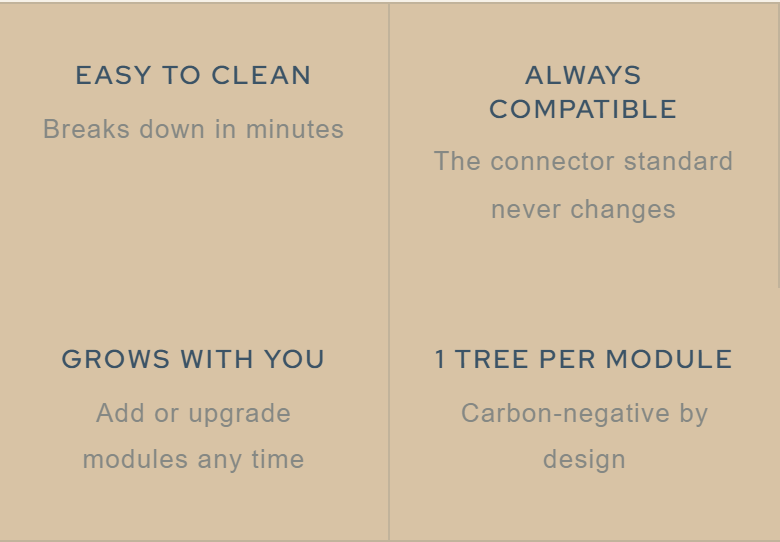
After
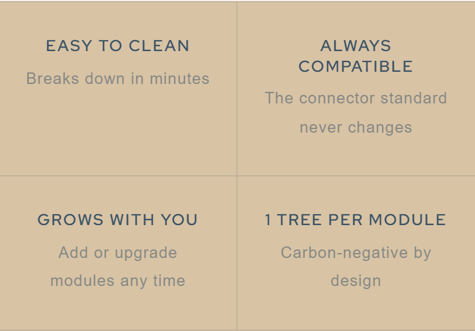
7. Reviews: fixed-height cards with a Read more reveal
Your feedback: the review cards were too big, every card stretched to match the largest one instead of a fixed height with a show-more reveal.
The review carousel comes from the Stamped app, and it stretched every card in a row to match the tallest one, so a
single long review made all four cards huge with empty space. Review text is now limited to six lines with a
Read more link on the reviews that were cut off; clicking it expands that card in place (and
Show less collapses it). Each card is only as tall as its own content. The rating summary, photos,
sorting, search and Write a review are untouched.
Before
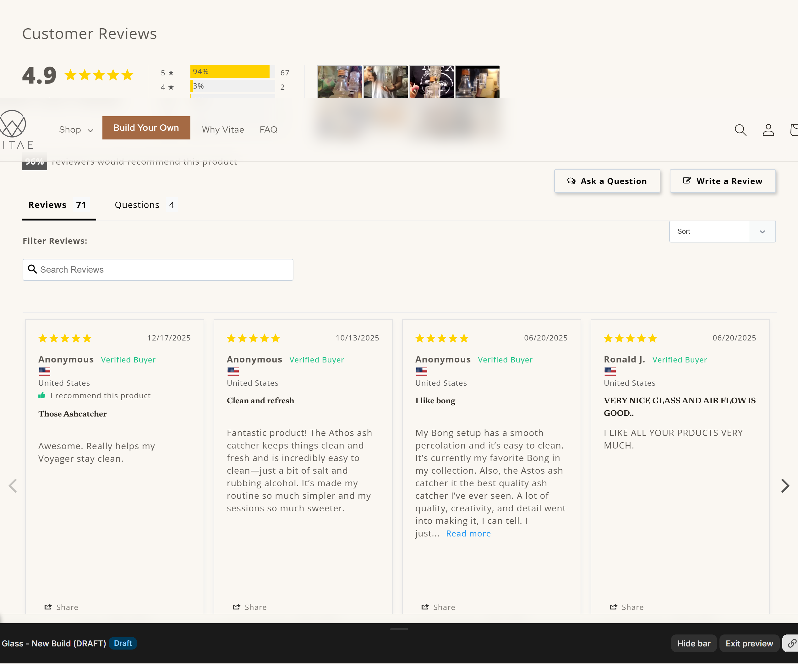
After
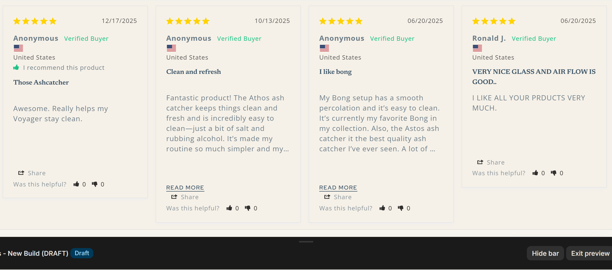
After, one review expanded
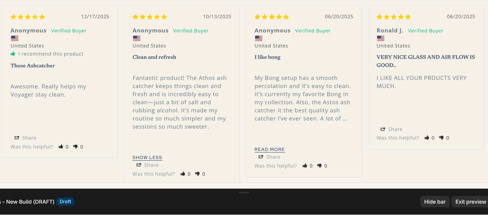
This is styling layered over the Stamped widget. Everything else about reviews (which reviews show, sorting, the questions tab) is still managed in the Stamped app.
8. Why Vitae: tree planting photo
Your feedback: the one-tree section on the Why Vitae page was missing its image.
The "One tree planted per module" section was showing the theme's placeholder graphic. It now uses the One Tree
Planted photo already in your store's files (seedlings being planted in Ghana, the same photo set as the current
Our Cause page).
Before
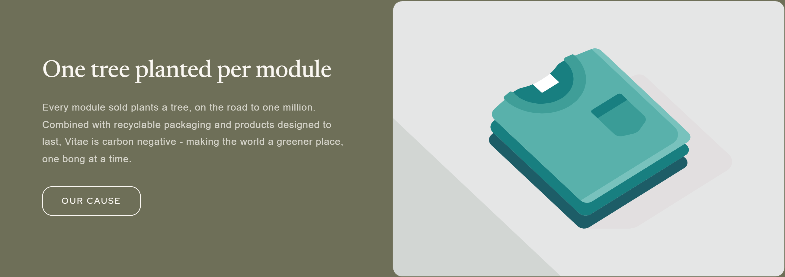
After
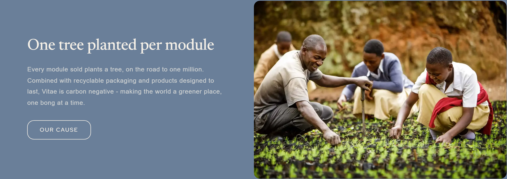
How to swap the photo yourself
Online Store, Edit theme, then page selector to Pages, Why Vitae.
In the left sidebar click the Image with text section ("One tree planted per module").
Under Image, click Change to pick another photo from your files or upload a new one. A landscape photo around 1200 by 800 pixels works best.
Click Save.
9. Build animation: longer, more deliberate
A refinement from our side: the complete-build animation went by too quickly to register, so we lengthened it.
When a build is completed, the chosen components fly together into an assembled stack before the summary
appears. The pieces now fly in a little more slowly and the assembled stack holds on screen longer before the
summary, so it reads as a moment rather than a flash: about 4.4 seconds from click to summary instead of 2.9.
Clicking anywhere still skips straight to the summary, and the hold time is adjustable (steps below).
BeforeClick to summary: 2.9 seconds.AfterClick to summary: 4.4 seconds.
How to tune the length yourself
Online Store, Edit theme, then page selector to Pages, Build Your Own.
Click the Vitae configurator section in the left sidebar.
Find Hold time after assembly (ms) and drag the slider. This is how long the assembled stack stays on screen before the summary; 2350 is the current setting, 1000 is brisk, 4000 is a long hold.
Click Save.
10. Pre-order instead of Sold out
Your request: show Pre-order instead of Sold out when an item is out of stock but can still be ordered.
A product that is out of stock but has Shopify's Continue selling when out of stock turned on now
shows a Pre-order button on its page, a short note under the buttons ("This item is made to
order. We will email you the estimated restock and ship date after checkout."), and a Pre-order badge and button
on its product card. Products that are out of stock without that setting still show Sold out. Nothing changes for
products that are in stock. Both states are shown below on the preview theme.
Out of stock, Continue selling offShows Sold out, button disabled (Walnut Ring).
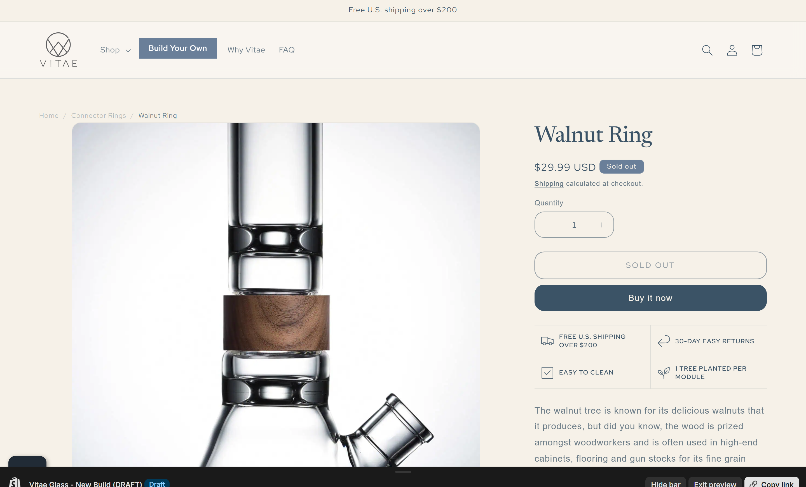
Out of stock, Continue selling onShows Pre-order with the made-to-order note (Linea Ashcatcher).
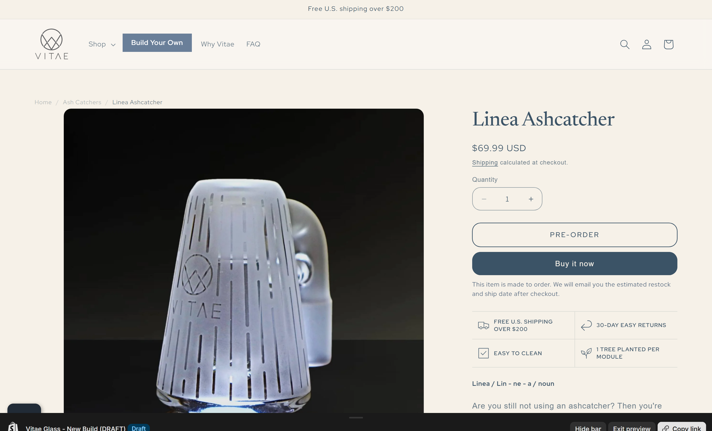
After, product card
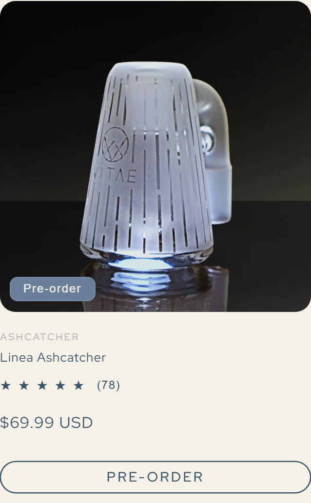
How to control which products show Pre-order
In Shopify admin, open Products and click the product.
Scroll to Inventory. If the product has variants, click a variant first.
Tick Continue selling when out of stock to allow pre-orders for that variant, or untick it to show Sold out instead.
Click Save. The site picks up the change immediately.
Right now 209 variants have this turned on and 276 do not. Which ones should allow pre-orders is a stock decision on your side; nothing on the site needs to change either way.